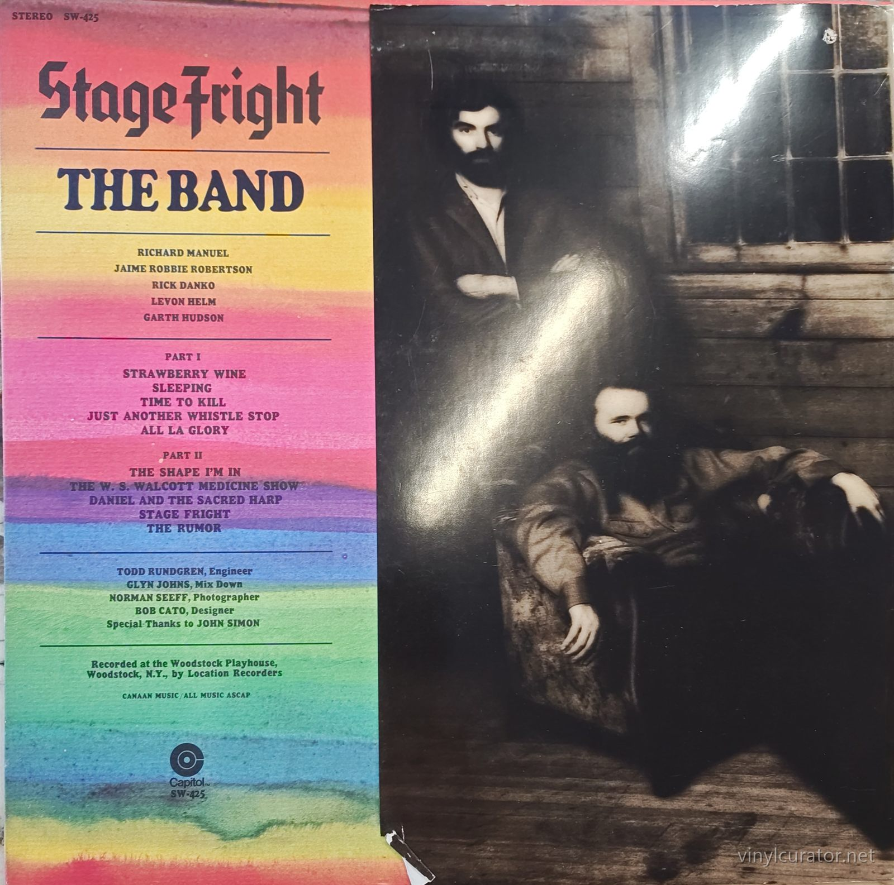
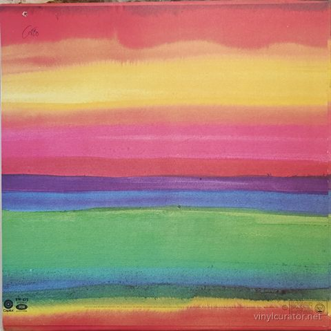
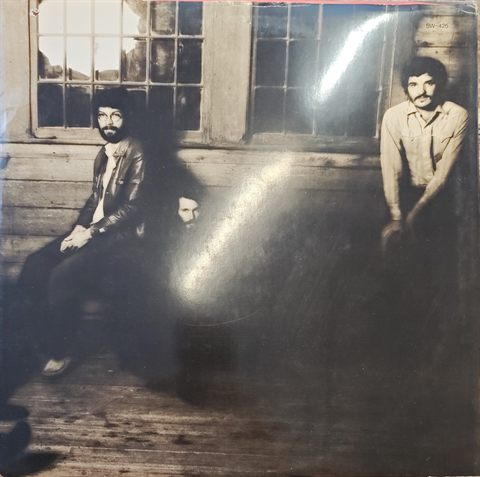
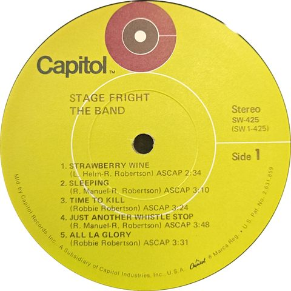
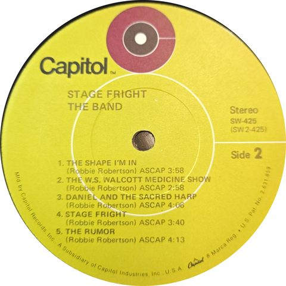
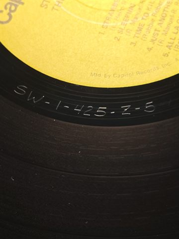
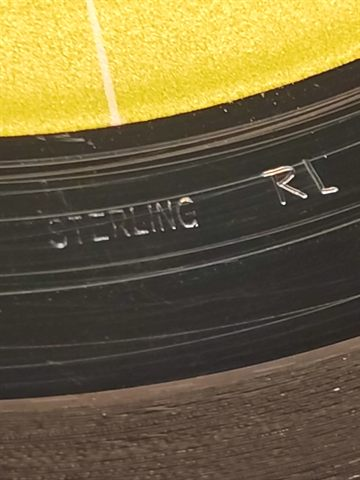
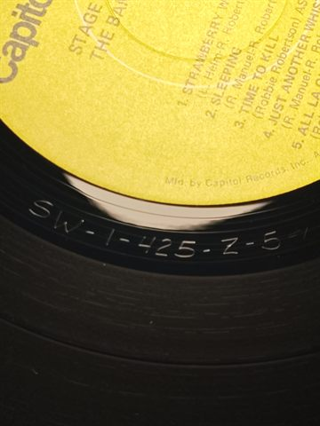
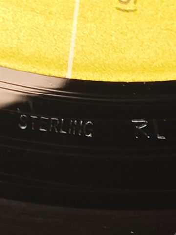

Thank you for buying this record. What follows is its documentation: the
pressing identified, the matrix / runout transcribed by hand from the dead
wax, and the condition as assessed before it was listed. It is yours to keep
with the record.
— Paul, Vinyl Curator
The Band
Stage Fright
1970 · Capitol Records SW-425 · Stereo · US · LP (with original wrap-around portrait sleeve) · 33 1/3 RPM









Pressing details
Label
Capitol Records
Catalogue number
SW-425
Year
1970
Mono / Stereo
Stereo
Country
US
Format
LP (with original wrap-around portrait sleeve)
Speed
33 1/3 RPM
Genre
Rock - Roots Rock/Americana
Producer
The Band (self-produced; Todd Rundgren engineer, Glyn Johns mixdown; John Simon credited only with 'Special Thanks')
Composer
Robbie Robertson (all tracks; Levon Helm co-wrote 'Strawberry Wine', Richard Manuel co-wrote 'Sleeping' and 'Just Another Whistle Stop')
Musicians
Rick Danko (bass, fiddle, vocals), Levon Helm (drums, mandolin, guitar, vocals), Garth Hudson (organ, piano, accordion, clavinet, saxophones), Richard Manuel (piano, organ, drums, harmonica, vocals), Jaime Robbie Robertson (guitars, vocals). The five members play everything; John Simon contributes an uncredited trombone on 'The W.S. Walcott Medicine Show' (his 'Special Thanks' jacket credit only hints at it). Todd Rundgren (engineer) and Glyn Johns (mixdown) are technical credits only.
Side A: SW-1-425-Z-5 #1
STERLING RL
Side B: SW-2-425-Z-6 #2
STIRLING RL
Condition
Cover
NM
Vinyl
NM
Variant chronology
1970 - US original, lime-green target label, RL Sterling deadwax (Scranton/Jacksonville/Winchester plant variants) <- this copy
1971-72 - US reissue, red/orange target label, no RL in wax
1978-80s - US reissue, tan then rainbow label
2015 - UMe 180g reissue
2020 - 50th Anniversary LP, Clearmountain remix, resequenced
This Pressing
1st US press (stereo, August 1970) - Capitol lime-green target label with 'A Subsidiary of Capitol Industries, Inc.' rim text; 'STERLING RL' in deadwax both sides (side 2 carrying the documented 'STIRLING' misspelling) = Robert Ludwig Sterling Sound cut; Z-5/Z-6 matrices with #1/#2 stampers; printed RIAA gold-award seal on back cover = jacket printed shortly after the LP's fall-1970 gold certification; original wrap-around portrait sleeve present.
The Album
Stage Fright is The Band's third album, cut in the spring of 1970 at the Woodstock Playhouse, a small theater in the group's adopted hometown of Woodstock, New York, after the back-to-back triumphs of Music from Big Pink and The Band and a grinding tour schedule had left the five members famous, exhausted, and wary. With John Simon stepping aside, the group produced itself, hiring a then-little-known Todd Rundgren to engineer via the Location Recorders remote truck and bringing in Glyn Johns to mix. Robbie Robertson's songs turn inward under the weight of sudden success: the title track dramatizes his own paralyzing fear of performing, 'The Shape I'm In' gives voice to Richard Manuel's unraveling, 'Daniel and the Sacred Harp' weighs art against commerce, and 'The Rumor' closes the record in pure paranoia. The album reached #5 on the Billboard chart, the group's highest position, and was certified gold within months of release. Critics heard a darker, more troubled record than its sepia-toned predecessors, and it has since been folded into the classic trilogy that made The Band the godfathers of what came to be called Americana and roots rock. 'Stage Fright' and 'The Shape I'm In' remained set-list staples through The Last Waltz, and the album's portrait of fame as a kind of sickness has only grown more resonant with time.
Tracklist
Side 1
1. Strawberry Wine
2. Sleeping
3. Time to Kill
4. Just Another Whistle Stop
5. All La Glory
Side 2
1. The Shape I'm In
2. The W.S. Walcott Medicine Show
3. Daniel and the Sacred Harp
4. Stage Fright
5. The Rumor
The Label
This copy carries Capitol's lime-green 'target' label - the new 'C'-around-a-record dome logo - with rim text 'Mfd. by Capitol Records, Inc., A Subsidiary of Capitol Industries, Inc., U.S.A.' and U.S. Pat. No. 2,631,859. Capitol introduced this design in June-July 1969, after the 1968 merger with Audio Devices that created Capitol Industries, and it ran until the red/orange target replaced it around 1971 (lingering on some titles into 1972). That window brackets this copy squarely to the original-issue era of the album's August 17, 1970 release, and the side-specific (SW 1-425)/(SW 2-425) suffixes match the original configuration. Post-1971 reissues (red/orange target, late-70s tan, 80s rainbow) carry different rim text and lack the Sterling RL cut, so the label design alone excludes all later pressings - the deadwax confirms the 1970 first pressing. Discogs documents three 1970 US plant variants (Scranton, Jacksonville, Winchester); the transcription captured no plant symbol, so the specific plant is unresolved but immaterial to the first-press verdict.
Fidelity
Robert Ludwig cut the lacquers at Sterling Sound ('RL' etchings) from the original analog master of Todd Rundgren's Woodstock Playhouse recordings, mixed by Glyn Johns. The RL cut is warm, open and dynamic, and Steve Hoffman forum consensus ranks the US RL Sterling original as the reference pressing of this title, ahead of post-1971 Capitol reissues (no RL in the wax) and period UK pressings. Stage Fright never received a MoFi/Analogue Productions-grade audiophile treatment; the modern alternatives are the 2015 UMe 180g reissue (quieter vinyl, flatter sonics) and the 2020 50th-anniversary LP, which is Bob Clearmountain's remix in a resequenced running order - a different presentation rather than an upgrade on the original mix. For the original mix, this pressing sits at the top of the fidelity hierarchy.
Notes
1970 Capitol SW-425 stereo - US original first pressing, released August 17, 1970. The lime-green target label with 'Mfd. by Capitol Records, Inc., A Subsidiary of Capitol Industries, Inc.' rim text is Capitol's June 1969-c.1971 design, exactly right for the release date. 'STERLING RL' in both sides' deadwax - including the well-documented 'STIRLING' misspelling on side 2 - confirms Robert Ludwig's Sterling Sound mastering, found only on the originals. Early Z-5/Z-6 matrices with #1/#2 stampers support first-press status; the printed RIAA gold seal on the back cover indicates a jacket printed just after gold certification and does not alter the vinyl verdict. No plant symbol was captured in the transcription - a Scranton triangle, LA star, or Winchester/W mark would pin the pressing plant (Discogs documents all three 1970 variants) but would not change the conclusion.
Documenting collections
I do this work for other people’s collections too — documenting a
collection record by record, researching individual pressings, and preparing
collections for sale or for insurance. If you have a collection you would like
documented, or a record you want identified properly, get in touch:
email
This record’s page: https://vinylcurator.net/albums/the-band-stage-fright/